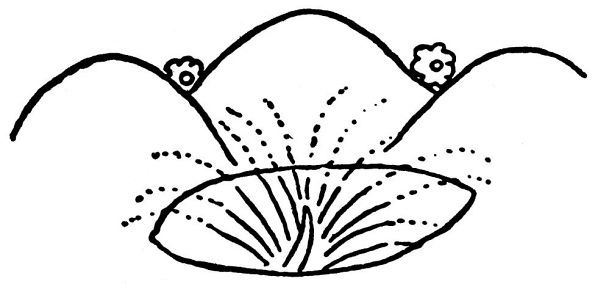
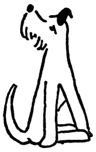

Proč teriéři hrabou
Pěkně seď, Dášeňko, a neházej sebou; já jen zaostřím a stisknu spoušť, hned to bude. Zatím se dovíš nějakou pohádku, třeba proč pejskové teriéři hrabou v zemi. Lidé říkají, že tam hledají myšičky. Kdepak myšičky! Tys ještě nikdy myšičku neviděla, a přece, ty neřáde, hrabeš v mých záhonech. A víš ty, proč to děláš? Nevíš; tak já ti to povím.
Už jsem ti vypravoval pohádku, kterak bohatý Foxlík, praotec všech pravých foxteriérů, v boji s Tatarem o ocásek přišel. Když porazil toho sveřepého chána, našel na zemi uťatou špičku své slavné a rekovné oháňky; a protože nechtěl, aby si s jeho bývalým ocáskem nakonec kočky hrály, zahrabal jej hluboko do země. A seď hezky, ty neposedo.
Od té doby se všichni správní foxteriéři honosili hrdinnými činy svého velikého předka a na památku po něm nosili ocásky uťaté. Ale pejsci jezevčíci, kteří nosí ocásky dlouhé, jim záviděli jejich slavné dějiny, a počali zlomyslně tvrdit a štěkat, že to není pravda, že podle moderního dějepisného bádání nebylo žádného boje s Tatařínem a že prý vůbec žádný praotec Foxlík ani chán Pelichán nebyl; prý je to jen, jak se říká, pouhá pověst, nemající historického podkladu.

To se rozumí, to si hrubosrstí foxteriéři nedali líbit a štěkali, že pohádka o Foxlíkovi je pravda pravdoucí a že důkazem toho jsou jejich useknuté ocásky. Ale jezevčíci jsou potměšilí a tvrdohlaví; namítali, že si ocásek může dát useknout, kdo chce, že na Malé Straně je dokonce jeden kocour s useknutým ohonem, a že zkrátka neuvěří, dokud neuvidí pravý uťatý ocásek bohatýra Foxlíka Velikého. Ať prý foxteriéři najdou ten posvátný pozůstatek svého vznešeného předka a dokážou svůj slavný původ.
Tak od té doby, Dášeňko, hledají foxteriéři ocásek svého praotce, zahrabaný kdesi hluboko v zemi. Vždycky když si vzpomenou, jak se jim jezevčíci posmívají, začnou horlivě hrabat a rýt čumáčkem do země, aby vyčuchali, není-li tam pochován ocásek jejich praotce. Dosud jej nenašli, ale jednou se ho jistě dohrabou; pak prý postaví pro něj veliké mauzoleum z mramoru se zlatým nápisem: Cauda Foxlii, což znamená ocásek Foxlíkův.
A vidíš, Dášeňko, od vás foxteriérů jsme to odkoukali my lidé a také se pořád hrabeme v zemi; hledáme tam popelnice a kostry pradávných lidí a ukládáme je do muzeí. Ne, Dášo, ty kosti tam nejsou ke kousání, jenom k dívání.
Hotovo.
